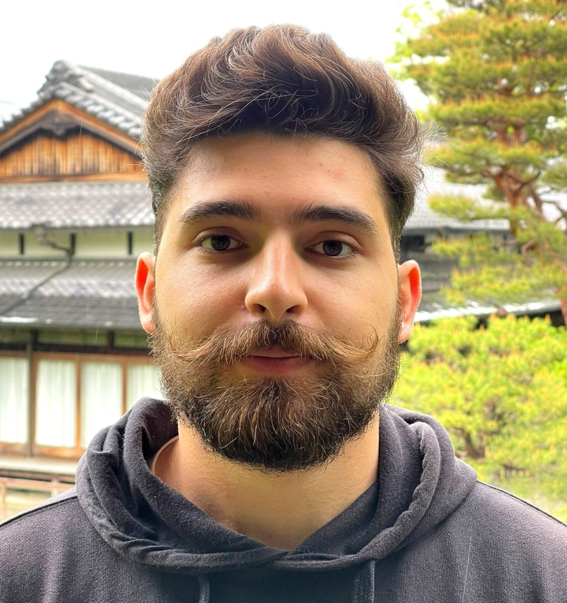

Private Guide · Osaka · Kansai Region · Japan
Beyond the guidebooks. An intimate journey through Osaka, Kyoto, Nara, and the hidden corners of the Kansai heartland — led by someone who lives it.
Kansai is Japan's cultural and spiritual core. Home to two ancient capitals, the country's finest cuisine, and a way of life that remains fiercely distinct — warmer, louder, more honest. Seven prefectures. Centuries of stories. Knowing where to look makes all the difference.
Japan's kitchen. Street food, neon, merchant spirit, and the most open-hearted people you'll meet anywhere in the country.
A thousand years of imperial culture. Wooden temples, bamboo groves, geisha districts — and the hidden paths tourists rarely find.
Ancient deer roam freely among UNESCO shrines. Japan's first permanent capital — serene, underrated, unforgettable.
Port city elegance, legendary beef, and a European-influenced skyline nestled between mountains and sea.
Japan's most perfect castle — white as a heron in flight, unchanged for four centuries.
Sleep in a mountain monastery. Walk lantern-lit cemetery paths at dawn. A world completely apart.

I'm Tony — a private guide based in the Kansai region. I came to Japan drawn by its culture, its food, and its people, and I never left.
What I offer is not a packaged tour — it is access to the Japan I know personally. The backstreet izakayas that don't appear on Google Maps. The temple at 6am before the crowds arrive. The market vendor who will become your favourite memory of the whole trip.
I speak English, Spanish and Arabic fluently, and I adapt to any pace or interest — whether you want to eat everything, photograph every corner, or simply walk and let the city breathe around you.
Every tour is private, fully personalised, and built entirely around you. No scripts. No group buses. Just Japan, as it really is.
Tony HanmaOne city, one day, done right. Markets at opening time, hidden shrines, street lunch, neighbourhood bars at dusk. Osaka or Kyoto — your choice.
A curated arc across the whole region — balancing iconic landmarks with the places most visitors never find. All logistics handled, nothing rushed.
Osaka is Japan's food capital. We eat through Kuromon market, neighbourhood shotengai, and the best standing sushi bar you will ever visit.
Monastery stays, dawn temple walks, traditional craft workshops — for travellers who want depth, not just sights on a checklist.
All tours are 100% private. Prices below are per person with a minimum of 2 guests. Solo travellers welcome — contact me for a quote.
Over 200 private tours. Real people, real stories.
Tony took us to a tiny ramen shop hidden in an Osaka alley — no sign, no English menu, just perfection. That single bowl was worth the whole trip.
We spent three days with Tony across Kansai. He knows every alley, every chef, every temple. It was the best experience in Japan.
The best experience of our entire trip to Japan. Tony speaks Spanish perfectly and took us to places we'd never have found on our own.
We did a 5-day journey from Osaka to Kōyasan. Tony arranged everything. Waking up in a monastery at dawn is something I'll never forget.
The food tour through Kuromon market was incredible. Tony knew every vendor personally. We ate things I couldn't name and loved every single one.
As someone with Japanese heritage visiting for the first time, I needed a guide who understood depth. Tony gave us history, culture and emotion all at once.
Tell me your travel dates, interests, and group size. I'll reply within 24 hours with a personalised proposal.
Thank you — I'll be in touch within 24 hours.